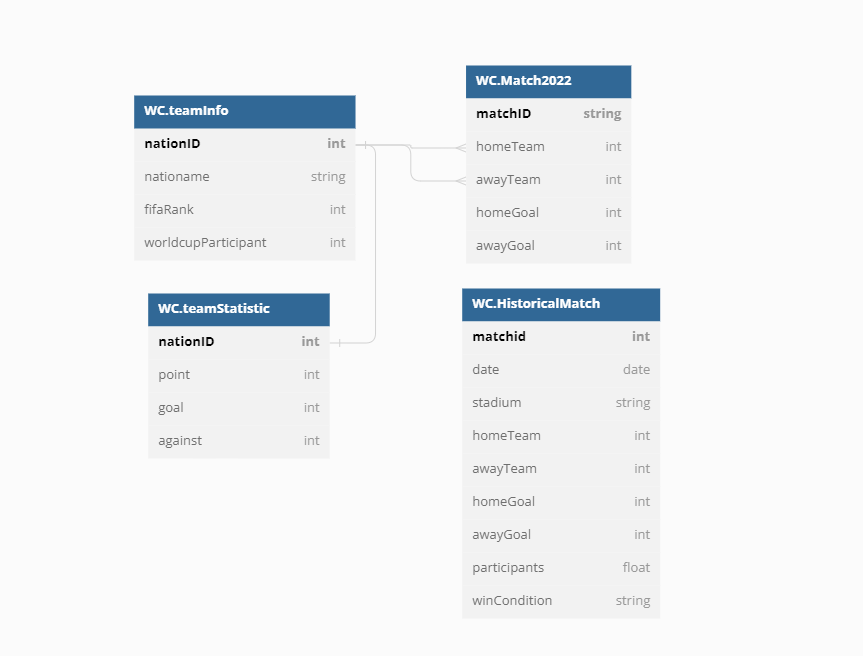
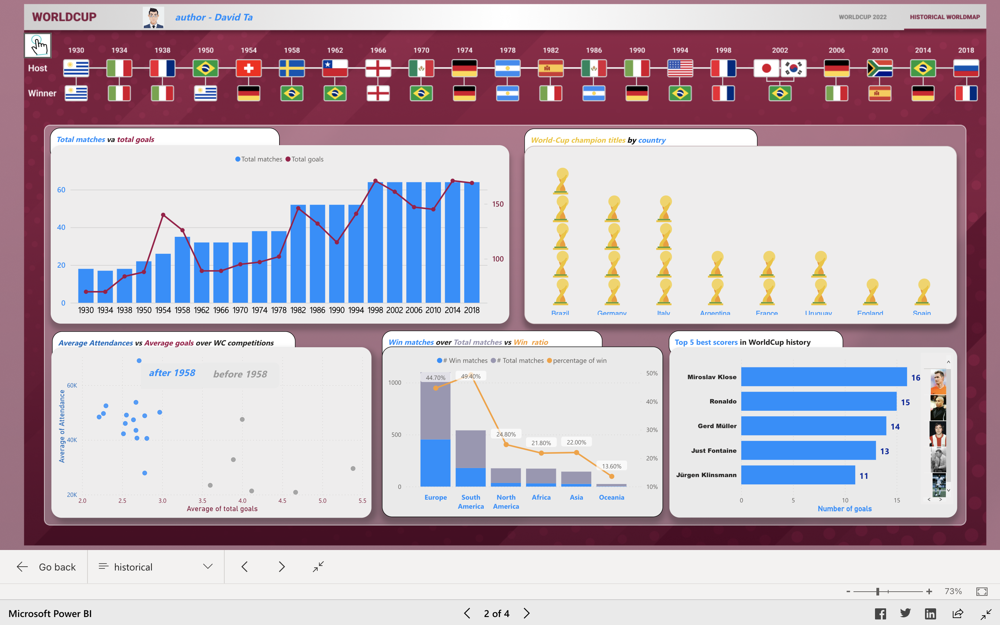

Data Modeling
Dashboard Section
Insights

Discussion: the trend of total matches and total goals among World Cup participants has changed. From 1930 to 1954, the number of matches was between 18 and 26 and the overall number of goals was less than 100. However, from 1958 to 1994, the number of matches increased from 32 to 38 and the total number of goals surpassed 100. Since 1998, the number of matches has been steady at 64, and the total number of goals has fluctuated between 145 and 182. In addition, we highlight the considerable shift in total goals scored in 1958, 1982, and 1998, as the number of total matches changed greatly in 1982 and 1998, although the number of goals scored in 1968 was due to a different factor, which will be detailed in the second chart.
Discussion: The scatter diagram provides a quick comparison of the average goals scored before and after 1958. The average number of goals scored in subsequent World Cup competitions was less than that of before 1958, particularly 1958(red round), which saw over five goals per match and also explained the anomalies in total goals scored that year. Moreover, we consider that the United States hosted approximately 69,000 attendees(blue round) in 1994, the year with the highest attendance.
Discussion: Europe and South America stand out from the rest of the world because their win rates of 44% and 49% are significantly higher than those of North America, Africa, Asia, and Oceania, which only managed to achieve win rates of 24%, 22%, and 14%, respectively.
Discussion: Brazil is the most successful champion, with five World Cup victories; Germany and Italy are close behind with four and two, respectively; Argentina, France, and Uruguay also have two victories; England and Spain have won one. With his 16 World Cup goals, Klose is the all-time leader and easily the best player in the tournament’s top five. As for Ronaldo, he’s the second-best goal scorer after that Muller, Fontaine, and Klisman respectively.
Discussion: In order to make a thorough comparison, we can easily obtain the confederation, FIFA ranking, market valuations, average age, World Cup participants, and performance over the previous five matches. In addition, a table summarizing the performance of the other teams in their group is included. The figure above displays that Ecuador outperformed Qatar across all metrics. This includes the FIFA rankings, market value, number of World Cup participants, and performance over the past five matches, so the actual result is 2-0 for Ecuador.
Discussion: As seen in the above graph, I think evaluating the disparity in FIFA rankings across eight groups is possible. Specifically, Group B appears to be this year's "group of death" based on FIFA's ranking because it has the smallest spread between its four teams compared to other groups. However, Group E also shows a competitive rankings.